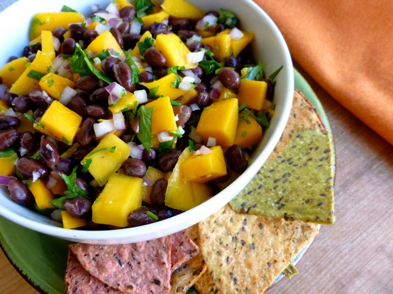

Black Bean Mango Salsa

Black Bean Mango Salsa
I love this salsa! It makes for a perfect summer appetizer. I particularly like that it has black beans for extra protein. When served over grilled chicken, it is even better.
Ingredients
- ½ cup diced mango
- ½ cup diced green bell pepper
- ½ cup diced yellow bell pepper
- ½ cup seeded and diced Roma (plum) tomatoes
- ½ cup corn kernels
- ½ cup low-sodium black beans, drained and rinsed
- &frac13 cup apple cider vinegar
- ¼ cup finely chopped cilantro
- 1 jalapeno pepper, minced
- 1 lime, zested and juiced
- 2 tablespoons diced red onion
- 2 teaspoons white sugar
- ½ teaspoon salt
Directions
-
Mix mango, green bell pepper, yellow bell pepper, tomatoes, corn, black beans, apple cider vinegar, cilantro, jalapeno pepper, lime zest, lime juice, red onion, sugar, and salt together in a bowl.
HOME